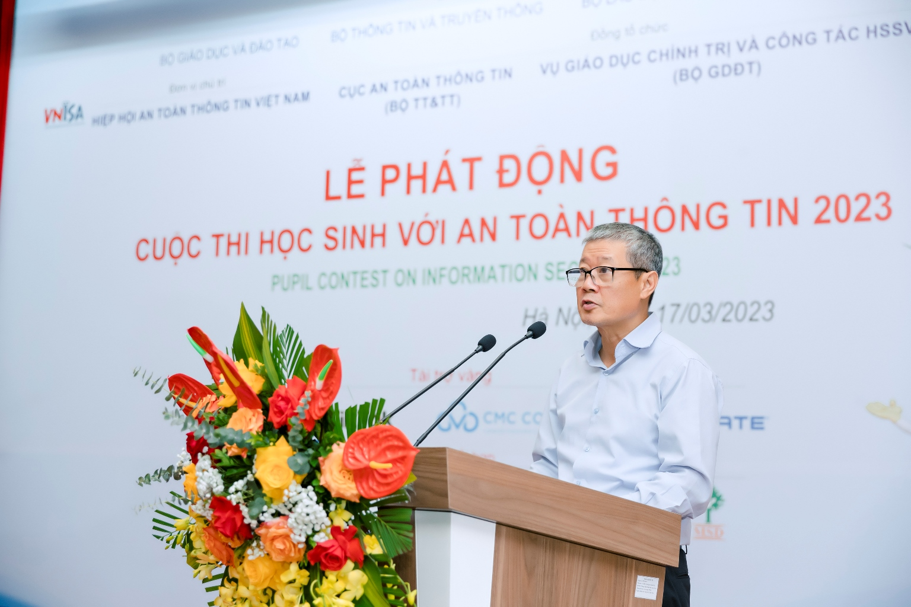
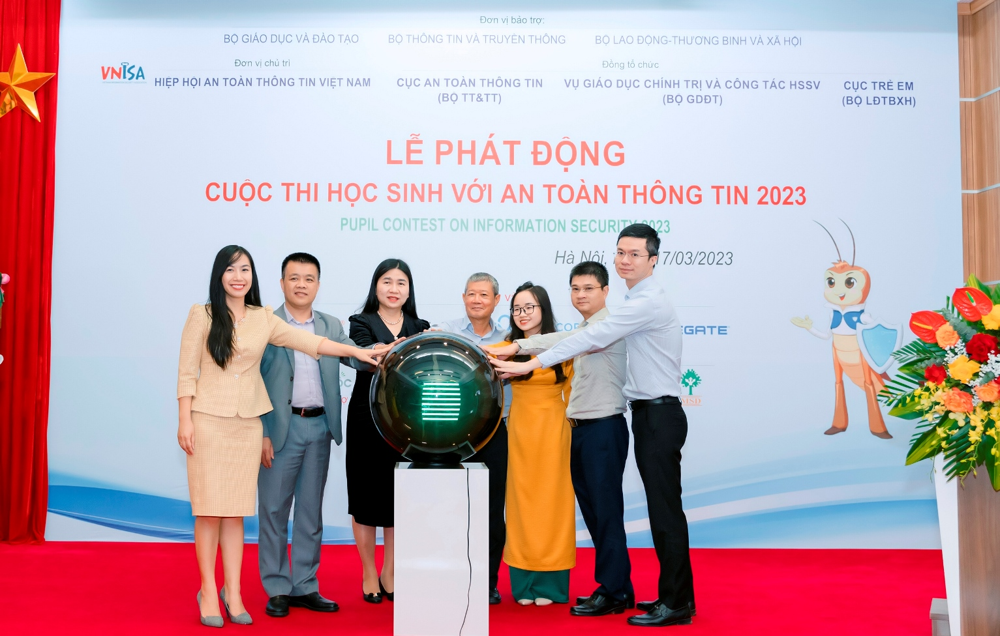

On March 17, 2023, the Vietnam Information Security Association – VNISA held the launching ceremony of the “Pupil Contest on Information Security 2023” in Hanoi.
The contest is hosted by VNISA with the support and sponsorship of the Ministry of Education and Training (MOET), the Ministry of Information and Communications (Information and Communications), the Ministry of Labor, War Invalids and Social Affairs (MOLISA), directly accompanied by: Department of Political Education Student Affairs (Ministry of Education and Training), Department of Information and Communications (Ministry of Information and Communications) and Department of Children (Ministry of Invalids and Social Affairs).
Besides, there is also the coordination of many businesses such as Bkav Joint Stock Company, Tiktok Vietnam, CMC Telecom, SCS Smart Network Security Solution Company, Cốc Cốc Company … and organizations such as World Vision Vietnam, Childfund in Vietnam, Institute for Sustainable Development Management Studies, Plan International Vietnam…;

VNISA Chairman Nguyen Thanh Hung delivered the opening speech
Speaking at the launching ceremony, Mr. Nguyen Thanh Hung, Chairman of VNISA said that this year is a pivotal year to implement the Program “Protecting and supporting children to interact healthily and creatively in the network environment in the period of 2021 – 2025” and also the second year that the contest “Students with ATTT” was held, for middle school students nationwide.
According to VNISA Chairman, along with the great benefits brought by the Internet, dangers to students are always present in the online environment in many different forms.Therefore, supporting children to learn, communicate and play effectively and safely in the online environment is the responsibility of the whole society.
“That is also the reason for us to continue to join hands to organize the “Pupil Contest on Information Security” this year. This is also an opportunity to raise awareness of parents and teachers about the responsibility to protect children in the online environment”, emphasized VNISA Chairman.

The Organizing Committee performs the ceremony of launching the contest